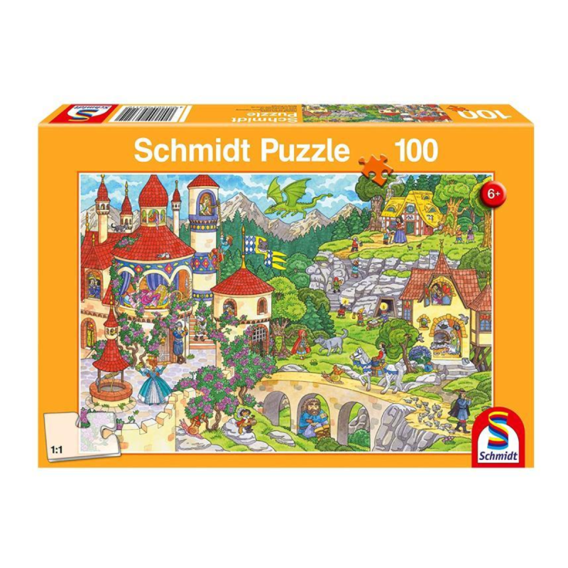
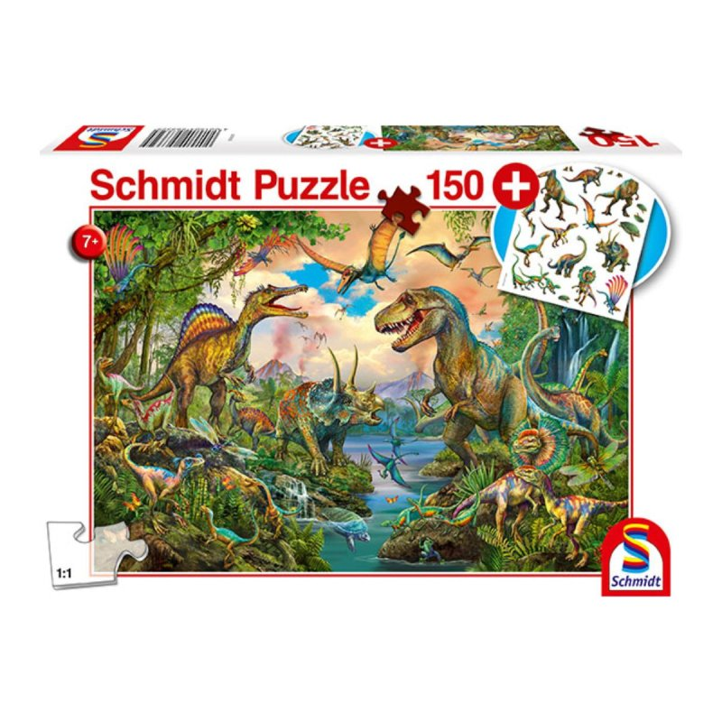
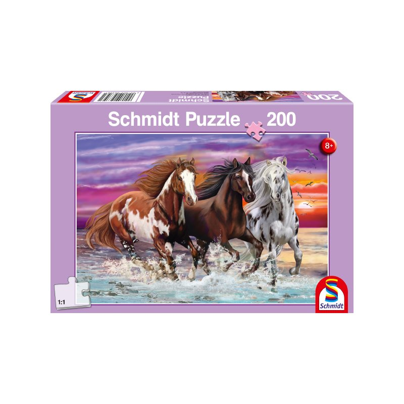
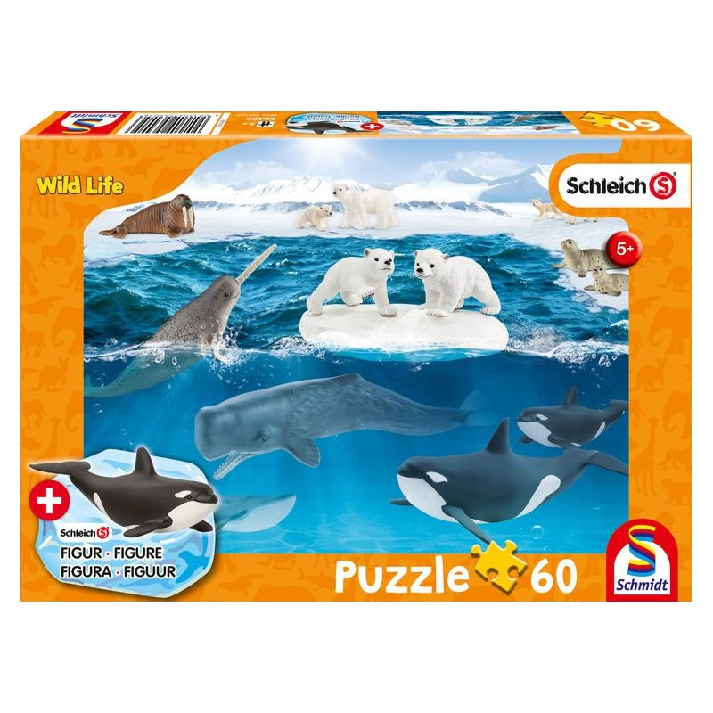

-

Puzzle 100 piezas
Que tus niños disfruten armando el puzzle de 100 piezas Con un tamaño armado de 36,1x24,3 cms, tendrán horas de diversión.
$12.990
Descuento: No -

Puzzle 150 piezas
Puzzle de 150 piezas con hermosas ilustraciones de Dinosaurios en la vida salvaje. Recomendado para niños sobre los 7 años. Excelente material.
$14.990
Descuento: No -

Puzzle 200 piezas
Este rompecabezas de la reconocida marca Schmidt destaca por sus vivaces colores e ilustraciones impresionantes. Sus piezas, diseñadas con un grosor extra y una suavidad especial, aseguran tanto una larga durabilidad como un ensamblaje sencillo y agradable.
$14.990
Descuento: No -

Puzzle 60 piezas
Puzzle de 60 piezas con hermosas ilustraciones del ártico más 1 figuritas de orca marca Schleich. Recomendado para niños sobre los 5 años. Excelente material.
$14.200
Descuento: No